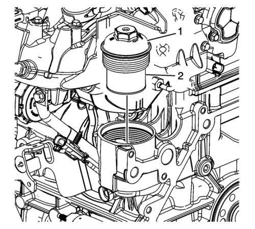

Drenaje de líquidos y desmontaje del filtro de aceite
Herramientas especiales
EN-44887 Llave para filtros de aceite
Si desea informarse sobre herramientas regionales equivalentes, consultar Herramientas especiales .

- Utilice la llave EN-44887 para extraer la caperuza del filtro de aceite (1). Quite el tapón de drenaje del cárter de aceite y deje salir el aceite.
- Retire el filtro de aceite (2) del tapón y deséchelo.
- Limpie la carcasa del filtro de aceite en el bloque del motor.
Precaución: Consulte Precaución con las fijaciones en la sección Prólogo
- Monte el tapón de drenaje del cárter de aceite y apriételo hasta 25 N·m (18 lib. pie).
- Quite de la bomba de agua el tapón de drenaje y deje que se vacíe el refrigerante por la camisa de agua.
- Aplicar sellador al tapón de drenaje de la bomba de agua. Consultar Adhesivos, líquidos, lubricantes y selladores .
- Monte el tapón de drenaje de la bomba de agua y apriételo hasta 20 N·m (15 lib. pie).
- Para limpiar o reparar el bloque del motor, no hace falta volver a colocar los tapones.
| © Copyright Chevrolet Europe. All rights reserved |